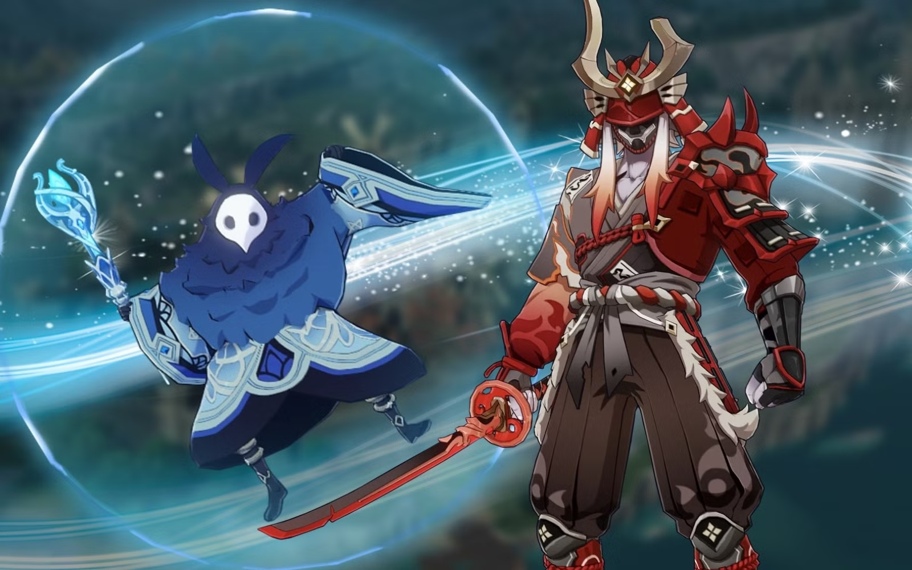
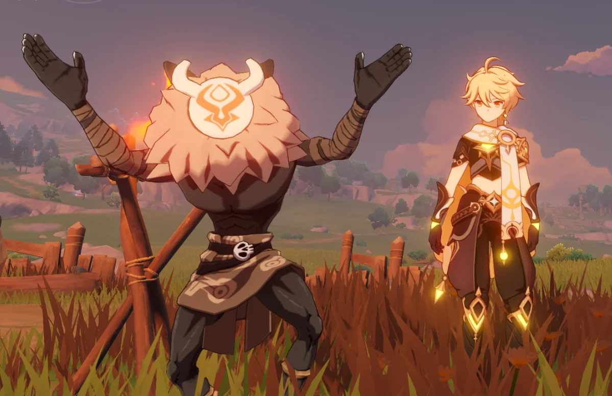
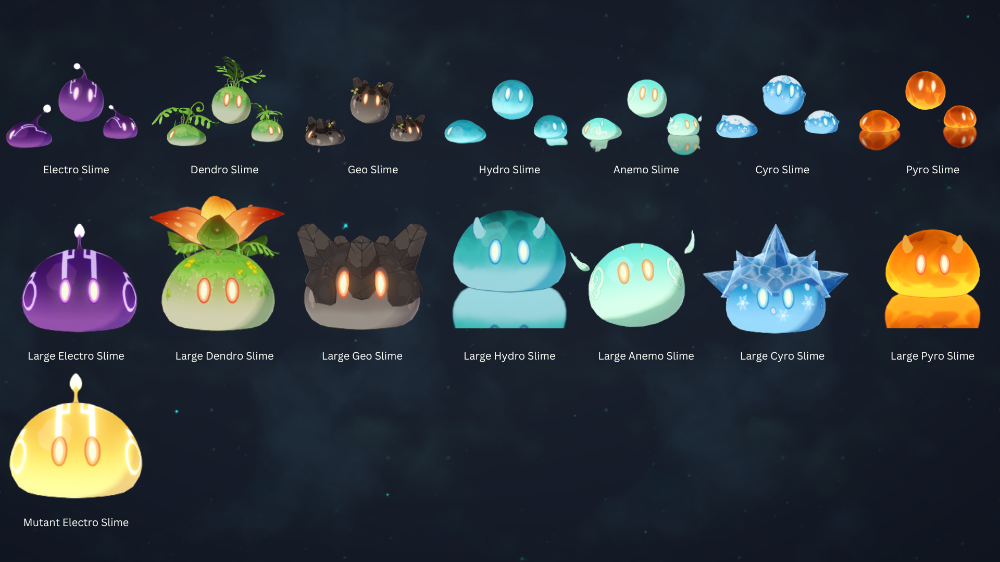
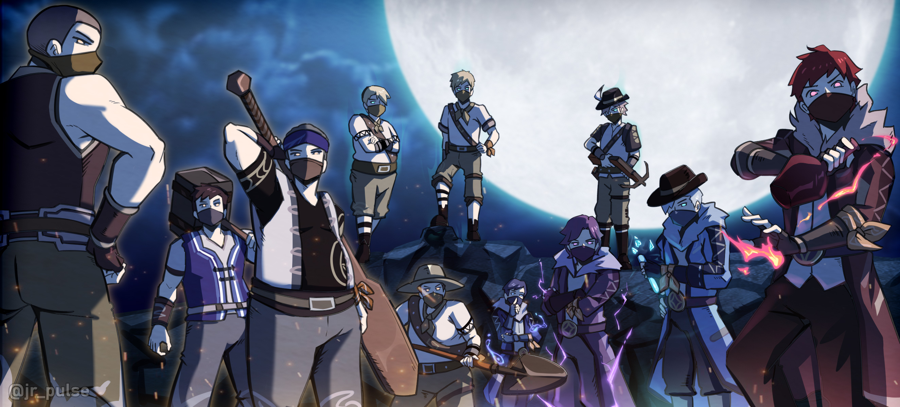
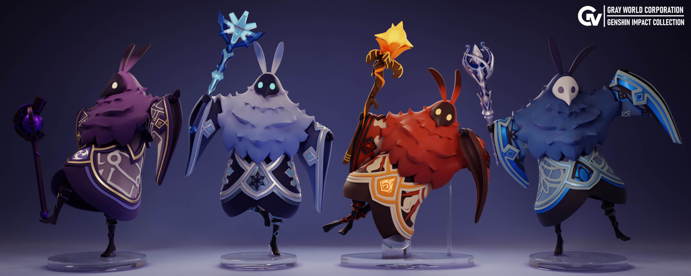
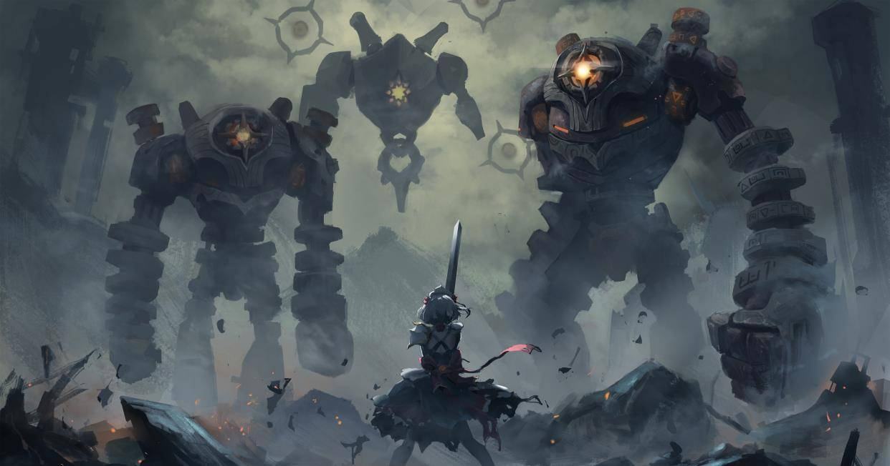
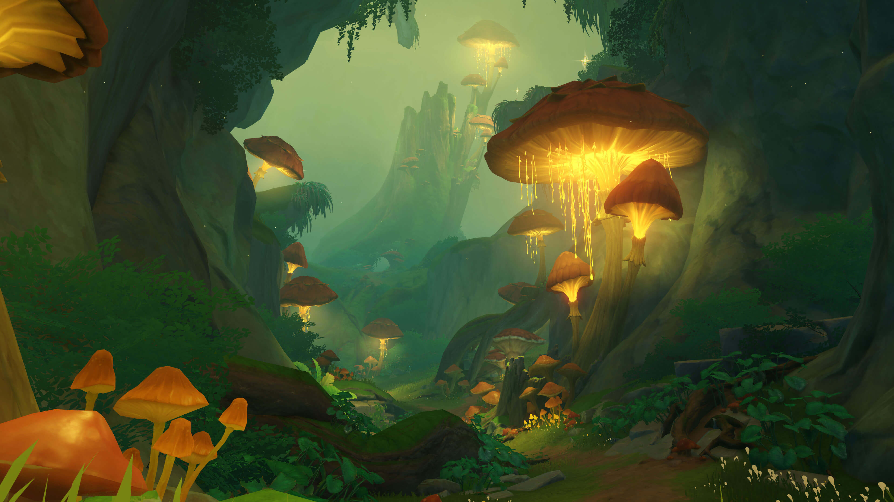
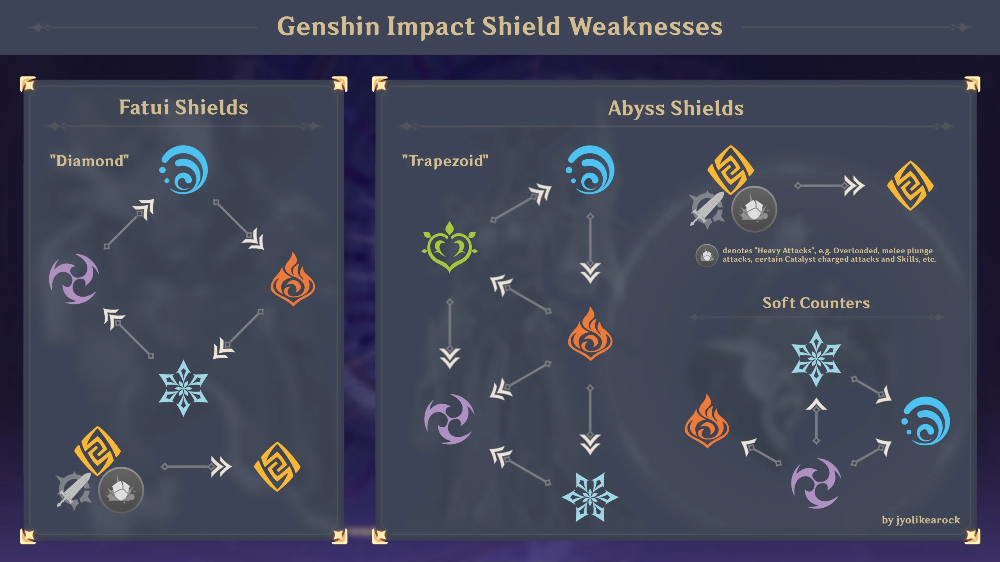
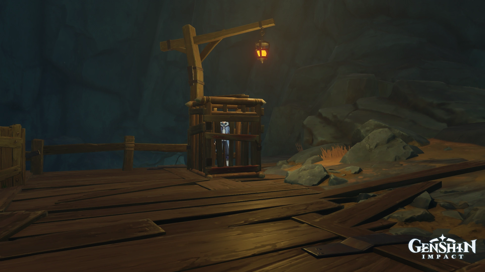

Mobs hostiles

¡Prepárate para la acción, viajero! Aunque Teyvat es un lugar hermoso y lleno de paisajes tranquilos, no todo el mundo es tan amable como los ciudadanos de Mondstadt. En cuanto salgas de los caminos principales, te encontrarás con diversas criaturas y grupos que no dudarán en atacarte en cuanto te vean.
Teyvat pese a que cuentas con una gran variedad de entidades que quieren interponerse en tu aventura, hay unas que nunca vana faltar las cuales son:
Los "hilichurls" o habitantes salvajes
Son los enemigos más comunes que verás por todo el mapa. Viven en pequeños campamentos y suelen estar durmiendo o bailando alrededor de una hoguera. Aunque parecen inofensivos de lejos, suelen atacar en grupo. Los hay de muchos tipos: desde los pequeños que lanzan piedras o usan flechas de fuego, hasta los enormes Mitachurls que cargan contra ti con escudos de madera o hachas gigantes. ¡No dejes que te rodeen!

Los Slimes: Elementos con vida
Estas pequeñas criaturas redondas están hechas de pura energía elemental. Los verás saltando cerca de lagos, flores o minas. Lo más importante que debes saber es que son inmunes a su propio elemento. Por ejemplo, si intentas atacar a un Slime de Agua (Hydro) con ataques de agua, no le harás nada de daño. Son excelentes para practicar las "Reacciones Elementales": intenta atacar a un Slime de Hielo (Cryo) con fuego (Pyro) y verás qué rápido desaparece.

Los Ladrones de tesoros: Humanos en busca de botín
A diferencia de los monstruos, estos son humanos que se dedican a saquear ruinas y asaltar viajeros. No tienen poderes elementales propios, pero usan trucos como bombas de humo, cócteles molotov o ballestas. Son menos resistentes que otros enemigos, pero suelen aparecer en grupos grandes y pueden ser muy molestos si te lanzan tierra a los ojos para cegarte. Derrotarlos es clave, ya que sueltan insignias necesarias para mejorar a muchos personajes.

Los magos del Abismo: El peligro elemental
Reconocerás a estos enemigos porque flotan y llevan una túnica con capucha. Lo más peligroso de ellos es su escudo elemental, que los hace casi invencibles hasta que logres romperlo. Para destruirlo rápido, debes usar el elemento opuesto al de su escudo (por ejemplo, usa Fuego para romper el escudo de Hielo). Una vez que les quitas el escudo, se vuelven muy débiles y quedan aturdidos por unos segundos, ¡ese es tu momento para atacar con todo!

Las máquinas de las ruinas: Gigantes de metal
Si exploras templos antiguos o zonas abandonadas, podrías activar por error a un Guardián de las Ruinas. Son robots gigantes con mucha vida y ataques físicos muy potentes, como su famoso "torbellino" donde giran los brazos sin parar. Un consejo de oro: tienen un punto débil brillante en la "cara" (el ojo). Si logras golpearlo dos veces con una flecha cargada de un arquero como Amber, la máquina se apagará temporalmente y podrás golpearla sin riesgo.

- tipo
- Humanos
- Autómatas
- fatui
- enemigos memorables
- Hilichurls
- seres elementales
- abismo
- bestias exóticas
- leyenda local
Consejos y estrategias para combates

-
La regla de oro: El elemento opuesto

Nunca ataques a un enemigo con su propio elemento, ya que será inmune o muy resistente. La estrategia ganadora es buscar la reacción elemental: si un enemigo está mojado (Hydro), usa ataques de Hielo (Cryo) para congelarlo o de Electricidad (Electro) para electrocutarlo. Aprender qué elemento "rompe" a otro te permitirá terminar batallas en segundos que de otro modo durarían minutos.
-
Inutiliza a las máquinas de las ruinas
Los Guardianes de las Ruinas parecen invencibles al principio por su gran tamaño, pero todos tienen un punto débil: el núcleo brillante en su "ojo" o en su espalda. Si usas a un arquero (como Amber) y disparas dos veces seguidas a ese punto brillante, la máquina se desactivará y quedará sentada en el suelo durante varios segundos. Aprovecha ese momento para desatar todos tus ataques definitivos sin miedo a recibir daño.
-
Prioridad de eliminación en campamentos

En los campamentos de Hilichurls o Ladrones de Tesoros, siempre elimina primero a los enemigos que atacan a distancia (arqueros o lanzadores de pociones). Estos enemigos suelen tener poca vida, pero sus ataques interrumpen tus movimientos y pueden aplicarte elementos peligrosos mientras intentas pelear con los guerreros más grandes. Si los quitas del camino primero, podrás concentrarte en los enemigos cuerpo a cuerpo con total calma.
-
Rompe escudos con inteligencia
Los Magos del Abismo son inofensivos una vez que pierden su escudo, pero romperlo a base de fuerza física es casi imposible. Debes usar el elemento que reaccione mejor: usa Pyro (Fuego) contra escudos Cryo (Hielo), usa Hydro (Agua) contra escudos Pyro, y usa Cryo contra los molestos escudos Electro o Hydro. En cuanto el escudo estalle, el mago quedará aturdido en el suelo; no le des tiempo a recuperarse.
-
Usa el entorno a tu favor
No ignores lo que hay alrededor del combate. Si hay barriles rojos, dispárales desde lejos para causar una explosión masiva; si hay agua cerca, empuja a los enemigos pequeños hacia ella para ahogarlos instantáneamente (especialmente útil con los Slimes de Fuego). Incluso la lluvia es tu aliada: cuando llueve, todos los enemigos están "mojados" permanentemente, lo que te permite congelarlos a todos sin esfuerzo usando cualquier ataque de Hielo.
-
El Sprint no es solo para correr
En Genshin Impact, el inicio de la animación de "esquivar" (cuando presionas el botón de correr rápidamente) te da unos breves instantes de invulnerabilidad conocidos como i-frames. Si cronometras bien tu sprint justo cuando el enemigo va a golpearte, el ataque pasará a través de ti sin hacerte daño. No gastes toda tu estamina corriendo; guárdala para esos pequeños impulsos que te salvarán la vida en el momento justo.